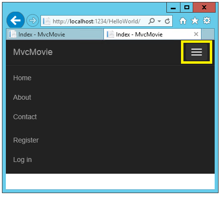
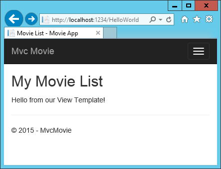

Adding a view¶
In this section you’re going to modify the HelloWorldController class to use Razor view template files to cleanly encapsulate the process of generating HTML responses to a client.
You’ll create a view template file using the Razor view engine. Razor-based view templates have a .cshtml file extension, and provide an elegant way to create HTML output using C#. Razor minimizes the number of characters and keystrokes required when writing a view template, and enables a fast, fluid coding workflow.
Currently the Index method returns a string with a message that is hard-coded in the controller class. Change the Index method to return a View object, as shown in the following code:
public IActionResult Index()
{
return View();
}
The Index method above uses a view template to generate an HTML response to the browser. Controller methods (also known as action methods), such as the Index method above, generally return an IActionResult (or a class derived from ActionResult), not primitive types like string.
- Right click on the Views folder, and then Add > New Folder and name the folder HelloWorld.
- Right click on the Views/HelloWorld folder, and then Add > New Item.
- In the Add New Item - MvcMovie dialog
- In the search box in the upper-right, enter view
- Tap MVC View Page
- In the Name box, keep the default Index.cshtml
- Tap Add
Replace the contents of the Views/HelloWorld/Index.cshtml Razor view file with the following:
@{
ViewData["Title"] = "Index";
}
<h2>Index</h2>
<p>Hello from our View Template!</p>
Navigate to http://localhost:xxxx/HelloWorld. The Index method in the HelloWorldController didn’t do much work; it simply ran the statement return View();, which specified that the method should use a view template file to render a response to the browser. Because you didn’t explicitly specify the name of the view template file to use, MVC defaulted to using the Index.cshtml view file in the /Views/HelloWorld folder. The image below shows the string “Hello from our View Template!” hard-coded in the view.
If your browser window is small (for example on a mobile device), you might need to toggle (tap) the Bootstrap navigation button in the upper right to see the to the Home, About, Contact, Register and Log in links.
Changing views and layout pages¶
Tap on the menu links (MvcMovie, Home, About). Each page shows the same menu layout. The menu layout is implemented in the Views/Shared/_Layout.cshtml file. Open the Views/Shared/_Layout.cshtml file.
Layout templates allow you to specify the HTML container layout of your site in one place and then apply it across multiple pages in your site. Find the @RenderBody() line. RenderBody is a placeholder where all the view-specific pages you create show up, “wrapped” in the layout page. For example, if you select the About link, the Views/Home/About.cshtml view is rendered inside the RenderBody method.
Change the contents of the title element. Change the anchor text in the layout template to “MVC Movie” and the controller from Home to Movies as highlighted below:
1 2 3 4 5 6 7 8 9 10 11 12 13 14 15 16 17 18 19 20 21 22 23 24 25 26 27 28 29 30 31 32 33 34 35 36 37 38 39 40 41 42 43 44 45 46 47 48 49 50 51 52 53 54 55 56 57 58 59 60 61 62 63 64 65 66 67 68 | <!DOCTYPE html>
<html>
<head>
<meta charset="utf-8" />
<meta name="viewport" content="width=device-width, initial-scale=1.0" />
<title>@ViewData["Title"] - Movie App</title>
<environment names="Development">
<link rel="stylesheet" href="~/lib/bootstrap/dist/css/bootstrap.css" />
<link rel="stylesheet" href="~/css/site.css" />
</environment>
<environment names="Staging,Production">
<link rel="stylesheet" href="https://ajax.aspnetcdn.com/ajax/bootstrap/3.3.6/css/bootstrap.min.css"
asp-fallback-href="~/lib/bootstrap/dist/css/bootstrap.min.css"
asp-fallback-test-class="sr-only" asp-fallback-test-property="position" asp-fallback-test-value="absolute" />
<link rel="stylesheet" href="~/css/site.min.css" asp-append-version="true" />
</environment>
</head>
<body>
<div class="navbar navbar-inverse navbar-fixed-top">
<div class="container">
<div class="navbar-header">
<button type="button" class="navbar-toggle" data-toggle="collapse" data-target=".navbar-collapse">
<span class="sr-only">Toggle navigation</span>
<span class="icon-bar"></span>
<span class="icon-bar"></span>
<span class="icon-bar"></span>
</button>
<a asp-controller="Movies" asp-action="Index" class="navbar-brand">Mvc Movie</a>
</div>
<div class="navbar-collapse collapse">
<ul class="nav navbar-nav">
<li><a asp-controller="Home" asp-action="Index">Home</a></li>
<li><a asp-controller="Home" asp-action="About">About</a></li>
<li><a asp-controller="Home" asp-action="Contact">Contact</a></li>
</ul>
@await Html.PartialAsync("_LoginPartial")
</div>
</div>
</div>
<div class="container body-content">
@RenderBody()
<hr />
<footer>
<p>© 2016 - MvcMovie</p>
</footer>
</div>
<environment names="Development">
<script src="~/lib/jquery/dist/jquery.js"></script>
<script src="~/lib/bootstrap/dist/js/bootstrap.js"></script>
<script src="~/js/site.js" asp-append-version="true"></script>
</environment>
<environment names="Staging,Production">
<script src="https://ajax.aspnetcdn.com/ajax/jquery/jquery-2.2.0.min.js"
asp-fallback-src="~/lib/jquery/dist/jquery.min.js"
asp-fallback-test="window.jQuery">
</script>
<script src="https://ajax.aspnetcdn.com/ajax/bootstrap/3.3.6/bootstrap.min.js"
asp-fallback-src="~/lib/bootstrap/dist/js/bootstrap.min.js"
asp-fallback-test="window.jQuery && window.jQuery.fn && window.jQuery.fn.modal">
</script>
<script src="~/js/site.min.js" asp-append-version="true"></script>
</environment>
@RenderSection("scripts", required: false)
</body>
</html>
|
Warning
We haven’t implemented the Movies controller yet, so if you click on that link, you’ll get a 404 (Not found) error.
Save your changes and tap the About link. Notice how each page displays the Mvc Movie link. We were able to make the change once in the layout template and have all pages on the site reflect the new link text and new title.
Examine the Views/_ViewStart.cshtml file:
@{
Layout = "_Layout";
}
The Views/_ViewStart.cshtml file brings in the Views/Shared/_Layout.cshtml file to each view. You can use the Layout property to set a different layout view, or set it to null so no layout file will be used.
Now, let’s change the title of the Index view.
Open Views/HelloWorld/Index.cshtml. There are two places to make a change:
- The text that appears in the title of the browser
- The secondary header (
<h2>element).
You’ll make them slightly different so you can see which bit of code changes which part of the app.
@{
ViewData["Title"] = "Movie List";
}
<h2>My Movie List</h2>
<p>Hello from our View Template!</p>
ViewData["Title"] = "Movie List"; in the code above sets the Title property of the ViewDataDictionary to “Movie List”. The Title property is used in the <title> HTML element in the layout page:
<title>@ViewData["Title"] - Movie App</title>
Save your change and refresh the page. Notice that the browser title, the primary heading, and the secondary headings have changed. (If you don’t see changes in the browser, you might be viewing cached content. Press Ctrl+F5 in your browser to force the response from the server to be loaded.) The browser title is created with ViewData["Title"] we set in the Index.cshtml view template and the additional “- Movie App” added in the layout file.
Also notice how the content in the Index.cshtml view template was merged with the Views/Shared/_Layout.cshtml view template and a single HTML response was sent to the browser. Layout templates make it really easy to make changes that apply across all of the pages in your application. To learn more see Layout.
Our little bit of “data” (in this case the “Hello from our View Template!” message) is hard-coded, though. The MVC application has a “V” (view) and you’ve got a “C” (controller), but no “M” (model) yet. Shortly, we’ll walk through how create a database and retrieve model data from it.
Passing Data from the Controller to the View¶
Before we go to a database and talk about models, though, let’s first talk about passing information from the controller to a view. Controller classes are invoked in response to an incoming URL request. A controller class is where you write the code that handles the incoming browser requests, retrieves data from a database, and ultimately decides what type of response to send back to the browser. View templates can then be used from a controller to generate and format an HTML response to the browser.
Controllers are responsible for providing whatever data or objects are required in order for a view template to render a response to the browser. A best practice: A view template should never perform business logic or interact with a database directly. Instead, a view template should work only with the data that’s provided to it by the controller. Maintaining this “separation of concerns” helps keep your code clean, testable and more maintainable.
Currently, the Welcome method in the HelloWorldController class takes a name and a ID parameter and then outputs the values directly to the browser. Rather than have the controller render this response as a string, let’s change the controller to use a view template instead. The view template will generate a dynamic response, which means that you need to pass appropriate bits of data from the controller to the view in order to generate the response. You can do this by having the controller put the dynamic data (parameters) that the view template needs in a ViewData dictionary that the view template can then access.
Return to the HelloWorldController.cs file and change the Welcome method to add a Message and NumTimes value to the ViewData dictionary. The ViewData dictionary is a dynamic object, which means you can put whatever you want in to it; the ViewData object has no defined properties until you put something inside it. The MVC model binding system automatically maps the named parameters (name and numTimes) from the query string in the address bar to parameters in your method. The complete HelloWorldController.cs file looks like this:
using Microsoft.AspNetCore.Mvc;
using System.Text.Encodings.Web;
namespace MvcMovie.Controllers
{
public class HelloWorldController : Controller
{
public IActionResult Index()
{
return View();
}
public IActionResult Welcome(string name, int numTimes = 1)
{
ViewData["Message"] = "Hello " + name;
ViewData["NumTimes"] = numTimes;
return View();
}
}
}
The ViewData dictionary object contains data that will be passed to the view. Next, you need a Welcome view template.
- Right click on the Views/HelloWorld folder, and then Add > New Item.
- In the Add New Item - MvcMovie dialog
- In the search box in the upper-right, enter view
- Tap MVC View Page
- In the Name box, enter Welcome.cshtml
- Tap Add
You’ll create a loop in the Welcome.cshtml view template that displays “Hello” NumTimes. Replace the contents of Views/HelloWorld/Welcome.cshtml with the following:
@{
ViewData["Title"] = "About";
}
<h2>Welcome</h2>
<ul>
@for (int i = 0; i < (int)ViewData["NumTimes"]; i++)
{
<li>@ViewData["Message"]</li>
}
</ul>
Save your changes and browse to the following URL:
http://localhost:xxxx/HelloWorld/Welcome?name=Rick&numtimes=4
Data is taken from the URL and passed to the controller using the model binder. The controller packages the data into a ViewData dictionary and passes that object to the view. The view then renders the data as HTML to the browser.
In the sample above, we used the ViewData dictionary to pass data from the controller to a view. Later in the tutorial, we will use a view model to pass data from a controller to a view. The view model approach to passing data is generally much preferred over the ViewData dictionary approach. See Dynamic V Strongly Typed Views for more information.
Well, that was a kind of an “M” for model, but not the database kind. Let’s take what we’ve learned and create a database of movies.